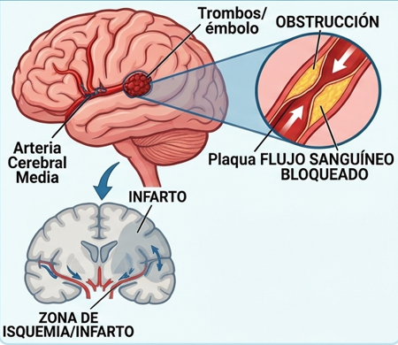
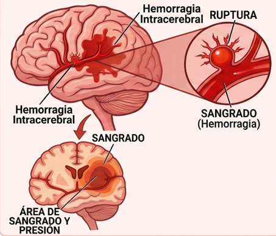
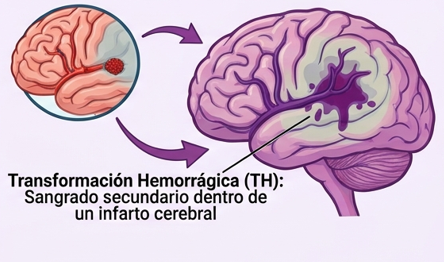
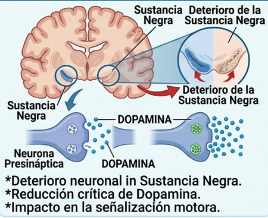
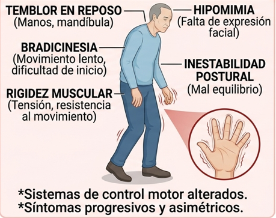
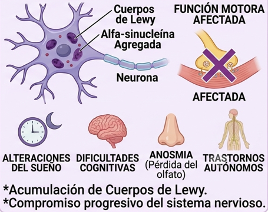

VISUALIZACIÓN 3D INTERACTIVA
1. ACV ISQUÉMICO
(Infarto Cerebral)

🧠 CAUSA: Obstrucción de arteria por trombo o émbolo. (87% de los casos).
⚠️ SÍNTOMAS: Adormecimiento facial, debilidad en un lado del cuerpo, dificultad para hablar.
2. ACV HEMORRÁGICO
(Derrame Cerebral)

🧠 CAUSA: Ruptura de un vaso sanguíneo intracerebral. (13% de los casos).
⚠️ SÍNTOMAS: Dolor de cabeza explosivo e intenso, náuseas, rigidez de nuca.
3. ACV MIXTO
/ Transformación Hemorrágica

🧠 CAUSA: Sangrado secundario dentro de un área previamente infartada por isquemia.
1. CAUSA NEUROLÓGICA
Degeneración de la Sustancia Negra

🧠 EXPLICACIÓN: Pérdida progresiva de las neuronas dopaminérgicas en la sustancia negra del cerebro.
2. SÍNTOMAS PRINCIPALES
Manifestaciones Motoras Clásicas

⚠️ INDICADORES:
- Temblor en reposo.
- Bradicinesia (lentitud extrema).
- Rigidez muscular.
3. PATOLOGÍA CELULAR Y NO MOTORA
Cuerpos de Lewy y Síntomas Cognitivos

🔬 DETALLES: Acumulación celular anómala de la proteína alfa-sinucleína (Cuerpos de Lewy).